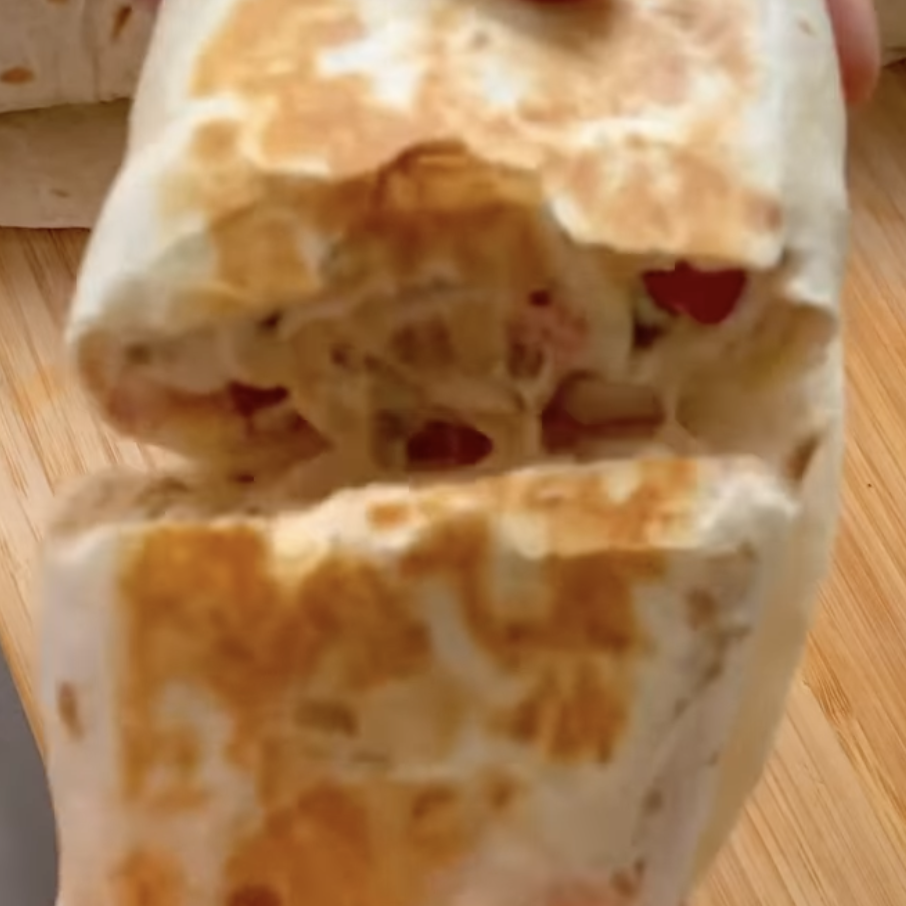

Burrito Chili y Pollo
Ingredientes:
*4 porciones
- 600 g Pechuga Pollo
- 1 Pimiento Rojo
- ½ Cebolla Morada
- 40 g Jalapeños
- 5 cds Chili Dulce
- 100 g Queso Crema Light
- 100 g Mezcla Queso rallado
- 2 cds “Chinese Five Spice”
- 4 Tortillas Harina
Instrucciones:
- Cocina el pollo en una sartén sazonado con el “Five Spice”, y cuando esté casi listo añade el chili
- Manda a un bowl el pollo con la cebolla, pimiento, jalapeño, queso crema, queso rallado más chili y
mezcla
- Enrollados en una tortilla y cuando estés listo para comerlos, tostalo.